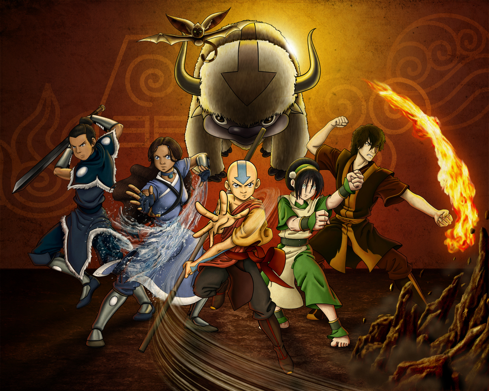

Topo do site
Avatar: The Last Airbender

Livro Três: Fogo.
Após os acontecimentos no Templo do Ar do Oeste, Aang acorda e percebe que o mundo acredita que ele
está morto. Seus amigos, agora disfarçados com roupas da Nação do Fogo, explicam que manter isso em
segredo lhes dará uma vantagem estratégica na batalha iminente. Em meio a planos e revelações, Sokka
busca aprender a lutar com uma espada da Nação do Fogo, enquanto Tio Iroh elabora um plano de fuga
de sua prisão.
Aang e Zuko descobrem a antiga amizade entre o Senhor do Fogo Sozin e o Avatar Roku, que acabou em
tragédia devido às ambições de Sozin pela dominação mundial. Zuko, como bisneto de ambos os líderes,
percebe a oportunidade de acabar com o conflito e restaurar a paz.
Katara, relutantemente, aprende a dominar o sangue, uma técnica sombria que exige força e habilidade
excepcionais e deve ser usada apenas durante a Lua Cheia.
O dia do eclipse e do ataque à Nação do Fogo chega, e o Time Avatar lidera a invasão. Aang chega ao
palácio, mas o Senhor do Fogo Ozai não está lá. Após enfrentarem resistência e desafios, eles são
forçados a recuar para o Templo do Ar do Oeste, perseguidos por Zuko.
Aang e Zuko se esforçam para provar sua lealdade ao grupo. Enquanto buscam o conhecimento ancestral
dos dragões, aprendem que a dominação do fogo é uma fonte de vida, não destruição.
Com a guerra em pleno andamento, cada membro do Time Avatar tem suas próprias batalhas e missões.
Zuko se une a Sokka para resgatar o pai de Katara, Hakoda, da prisão da Nação do Fogo, e ajuda
Katara a enfrentar o assassino de sua mãe, ganhando a confiança dela.
Aang é confrontado com o dilema de matar o Senhor do Fogo Ozai para acabar com a guerra, mas sua
natureza pacifista como Nômade do Ar o impede de tomar essa decisão. Ele busca orientação com as
encarnações passadas do Avatar para encontrar uma solução.
A guerra culmina em uma batalha final. A Ordem Lótus Branca liderada por Iroh liberta Ba Sing Se,
enquanto Sokka, Suki e Toph lutam contra as aeronaves inimigas. Katara enfrenta Azula em uma batalha
feroz e consegue derrotá-la.
O confronto final entre Aang e Ozai leva o Avatar a dominar o estado Avatar, mas ele ainda se recusa
a matar. Aang encontra uma solução criativa e desabilita permanentemente a habilidade de Ozai de
dobrar fogo, derrotando-o sem recorrer à violência.
Com a guerra finalmente encerrada, Zuko se torna o novo Senhor do Fogo e declara o fim do conflito.
O mundo finalmente encontra a paz e equilíbrio, graças aos esforços e sacrifícios do Time Avatar.